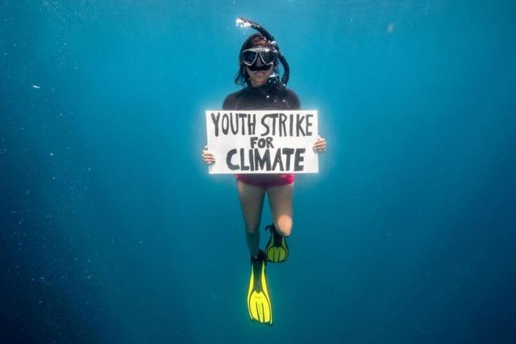
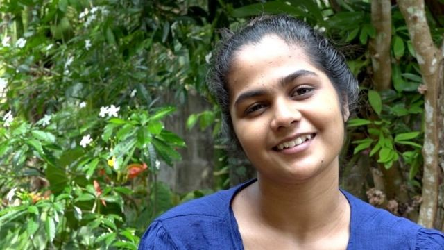

No Dia da Terra, Joe Biden, atual presidente dos EUA, começa um evento virtual de dois dias com 40 líderes mundiais para discutir a situação de crise climática do mundo
Jovens explicam por que o ativismo é importante para elas, e manifestam seu entendimento para salvar o meio ambiente.
Na expectativa desses eventos importantes sobre clima, cinco jovens manifestantes explicaram para a BBC por que o ativismo é importante para elas, o que elas fazem para promover mudanças no mundo e suas esperanças para o futuro.
"Greve dos Jovens pelo Clima" Shaama Sandooyea realizou o primeiro protesto subaquático do mundo para proteger um dos maiores prados de ervas marinhas do mundo.
Bhagya Abeyratne acredita que o ecossistema da reserva florestal de Sinharaja está sob ameaça de desmatamento e projetos de construção."Falo da destruição ambiental que vejo com meus próprios olhos, todas as manhãs e todas as noites", "Se essa tendência no país continuar, os desertos se espalharão por todo o país"
"Quando eu era adolescente, a imagem do urso polar nas calotas polares derretendo me fazia pensar que isso não tinha nada a ver comigo ou com meu estilo de vida"

"A poluição lá era terrível, mas percebi que meus parentes não entendiam nada sobre isso."Sophia Kianni espera educar as pessoas em todo o mundo sobre o impacto das mudanças climáticas.
.jpg)